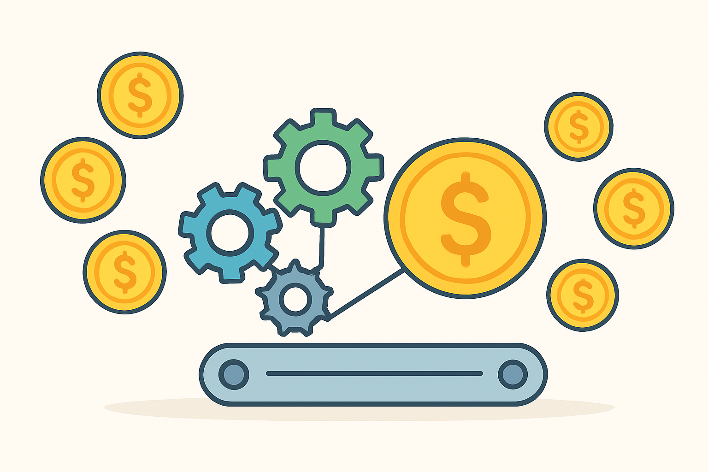
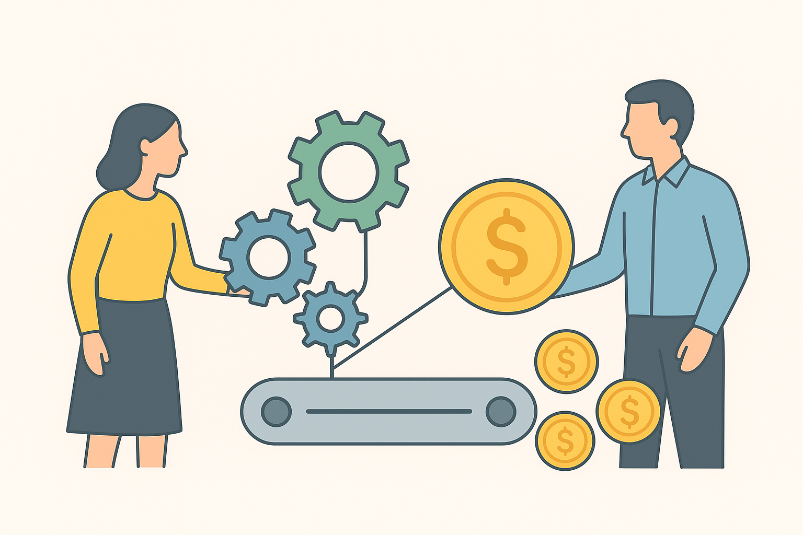

4 Rendite verstehen: Wie dein Geld für dich arbeitet
4.1 Was bedeutet „Rendite“ eigentlich?
Wenn du das Wort „Rendite“ hörst, klingt es erstmal nach Bankenglisch oder Nachrichtensprecher. Dabei beschreibt es etwas sehr Einfaches:
Rendite ist das Ergebnis deiner Geldreise – sie zeigt, wie stark dein Geld über die Zeit gewachsen ist.
Wenn du einem Freund zehn Euro gibst und er dir ein Jahr später elf Euro zurückgibt, hast du eine Rendite von zehn Prozent erzielt.
Die Rendite ist also die Belohnung dafür, dass du dein Geld zur Verfügung stellst und es arbeiten lässt, anstatt es unter dem Kopfkissen zu lassen.
Aber was heißt „arbeiten“, wenn Geld keinen Körper hat, keine Hände und keine Beine?

Wenn du investierst, gibst du dein Geld dorthin, wo andere es nutzen können, um Werte zu schaffen – zum Beispiel Firmen, die Computer bauen, Straßen sanieren oder Energie erzeugen.
Diese Firmen erwirtschaften Gewinne – und du bekommst einen kleinen Teil davon ab.
Das ist Rendite.
4.2 Ein Beispiel aus dem Alltag
Stell dir Anna vor, 16 Jahre alt, Schülerin, die einen Schülerjob bei einem Eiscafé hat.
Sie verdient 80 Euro im Monat und beschließt, die Hälfte zurückzulegen.
Eines Tages erklärt ihr älterer Cousin: „Wenn du 40 Euro im Monat in einen ETF investierst, kann das in ein paar Jahren ordentlich wachsen.“
Anna runzelt die Stirn: „Hä, wachsen? Geld wächst nicht auf Bäumen!“
Ihr Cousin lächelt: „Doch, wenn du den richtigen Boden findest.“
Das ist die Kernidee: Geld kann wachsen, wenn du es in etwas pflanzt, das Früchte trägt.
4.3 Warum Geld auf dem Konto sich kaum bewegt
Geld auf dem Konto ist wie Wasser in einer Flasche.
Es ist sicher, bleibt aber auch stehen.
Investiertes Geld ist wie Wasser in einem Fluss – es fließt, bewegt sich, erreicht neue Orte.
Manchmal spritzt es über, manchmal zieht es sich zurück, aber insgesamt strömt es weiter.
Wenn du das Wasser immer nur in der Flasche bewahrst, verändert sich nichts.
Wenn du es auf Reisen schickst, kann es Landschaften formen.
Rendite ist also das Zeichen, dass dein Geld etwas bewegt – in der Wirtschaft.
4.4 Woher Rendite kommt
Es gibt drei Hauptquellen für Rendite:
Zinsen – wenn du jemandem Geld leihst (z. B. einer Bank oder dem Staat) und dafür eine feste Belohnung bekommst.
Klassisch bei Anleihen oder Tagesgeld.Dividenden – wenn du Anteile an Unternehmen hältst (Aktien / ETFs), bekommst du regelmäßig einen Teil ihres Gewinns.
Wertsteigerung – wenn der Wert deiner Anteile steigt.
Beispiel: Du kaufst eine Aktie für 50 €, und in einigen Jahren steht sie bei 80 €.
Rendite ist die Summe aus all dem.
Aber sie kommt nicht gleichmäßig – und das ist wichtig.
Manchmal passiert monatelang wenig, dann plötzlich sehr viel.
Es ist ein bisschen wie Sport: Der Muskel wächst nicht bei jedem Training sichtbar, aber nach Monaten spürst du den Unterschied.
4.5 Einfache Renditerechnung – ganz ohne Formeln
Du kannst Rendite gedanklich so begreifen:
Rendite ist das Wachstum deines Geldes über die Zeit.
Beispiel:
Du investierst 100 € und bekommst nach einem Jahr 106 € zurück.
Dann beträgt deine Rendite 6 %.
Das Besondere: Wenn du die 106 € wieder anlegst, wächst nicht nur der ursprüngliche Betrag, sondern jetzt auch der Zugewinn mit.
Das ist der berühmte Zinseszins‑Effekt – das Herzstück des Vermögensaufbaus.
4.6 Die Magie des Zinseszinses
Albert Einstein soll einmal gesagt haben – angeblich mit einem Augenzwinkern –:
„Der Zinseszins ist die stärkste Kraft im Universum.“
Ob er es wirklich gesagt hat, wissen wir nicht, aber er hätte recht behalten.
Zinseszins bedeutet: Du bekommst nicht nur Zinsen auf dein Startgeld, sondern auch auf die Zinsen, die du in den Jahren davor erhalten hast.
Es ist Wachstum auf Wachstum, oder wie man sagt: „Geld, das Kinder bekommt.“

Ein Beispiel:
Du sparst 50 € im Monat in einen ETF, der im Durchschnitt 6 % Rendite pro Jahr bringt.
Nach 10 Jahren: ungefähr 8 200 € Nach 20 Jahren: ≈ 19 600 € Nach 30 Jahren: ≈ 38 000 € Nach 40 Jahren: ≈ 75 000 €
Du siehst: Das Geld wächst immer schneller.
Je länger du Zeit lässt, desto steiler wird die Kurve – genau wie der Schneeball am Hang.
Das ist kein Trick, keine Zauberei – es ist schlicht Mathematik mit viel Geduld.
4.7 Warum Rendite und Risiko unzertrennlich sind
Erinnerst du dich an Kapitel 3? Dort ging es um Wellen und Achterbahnen.
Hier kommt das Wiedersehen:
Jede Rendite hat einen Preis – und der heißt Risiko.
Wenn du Glücksspiele spielst, riskierst du alles für einen unberechenbaren Gewinn.
Wenn du investierst, riskierst du Schwankungen – aber keine Willkür.
Das Risiko lässt sich verstehen und steuern.
Langfristig gleichen sich Aufs und Abs meist aus.
Kurzfristig kann es stürmen; langfristig scheint die Sonne oft heller als gedacht.
Deshalb lautet eine goldene Regel des Investierens:
„Zeit am Markt schlägt das Timing des Marktes.“
Das heißt: Regelmäßig investiert bleiben bringt mehr Rendite, als zu versuchen, jedes Hoch und Tief zu erraten.
4.8 Rendite ist kein Sprint – sie ist ein Marathon
Viele Anfänger/-innen schauen nach einer Woche auf ihr Depot: „Mist, minus 2 %!“
Aber Rendite wirkt über Zeiträume, nicht über Tage.
Ein einfaches Bild:
Ein Baum wächst nicht sichtbar von einem Tag zum nächsten, doch nach Jahren spendet er Schatten und vielleicht Früchte.
Investieren ist genauso: kleine Schritte, große Wirkung.
Je länger du investiert bleibst, desto mehr wird der Zinseszins zu deinem besten Freund.
Kurzfristige Rückgänge sind wie trockene Sommer – sie gehören zum Jahreslauf eines Baumes.
4.9 Vergleich: Sparen – Investieren – Vermehren
💭 Stell dir drei Freund/-innen vor:
👉 Lisa spart ihr gesamtes Geld auf dem Konto.
👉 Ben investiert regelmäßig einen kleinen Teil in ETFs.
👉 Tom gibt alles sofort aus.Nach zehn Jahren:
👉 Tom: tolle Erinnerungen, aber wenig Ersparnis.
👉 Lisa: stabiler Kontostand, aber Kaufkraftverlust.
👉 Ben: sein Depot schwankt, aber ist stetig gewachsen.Das ist der Unterschied zwischen „bewahren“ und „vermehren“.
Sparen erhält, Investieren vermehrt.
4.10 Emotionen und Erwartung
Viele denken: „Ich will 10 % im Jahr verdienen!“
Das klingt gut – aber eine gute Rendite bedeutet nicht, dass sie jedes Jahr gleich aussieht.
Geldanlage ist nie eine gerade Linie, sondern eher ein Zickzack mit Aufwärtstrend.
Wenn du das verstehst, bist du mental vorbereitet und bleibst ruhig, wenn sich Zahlen bewegen.
Das wahre Ziel ist durchschnittliche Stabilität, nicht jedes Jahr Rekordgewinne.
4.11 Realrendite – der Blick hinter die Zahl
Mal angenommen, du bekommst auf dein Konto 2 % Zinsen. Klingt nett, oder?
Aber wenn die Preise in derselben Zeit 3 % steigen, schrumpft deine Kaufkraft.
Rendite ist also nur relevant, wenn du die Inflation abziehst.
Das Ergebnis nennt man Realrendite – deine „wahre“ Belohnung.
Wenn du 6 % erwirtschaftest und 2 % Inflation hast, bleibt real 4 %.
Das klingt vielleicht wenig, aber über Jahrzehnte ist das enorm.
4.12 Ein kurzer Blick in die Geschichte
In den letzten 100 Jahren erzielten weltweite Aktienmärkte im Durchschnitt rund 6–7 % pro Jahr - nach Inflation etwa 4–5 %.
Das klingt unspektakulär, aber der Zinseszins macht daraus Wunderdinge.
Hättest du 1 000 Euro 1980 investiert, läge der Wert heute (je nach Markt) bei über 12 000 Euro oder mehr.
Ganz ohne Sonderwissen – nur durch Dranbleiben.
Das nennt man Rendite durch Zeit, nicht durch Glück.
4.13 Wie du Rendite „sehen“ lernst
Eine Rendite spürst du nicht, sie wächst unsichtbar.
Doch du kannst sie sichtbar machen, wenn du kleine Erfolge feierst:
👉 Ein Jahr geschafft? Schau, was passiert ist.
👉 Dividende bekommen? Schön – das ist echtes Einkommen.
👉 Dein Depot schwankt? Umarme die Erfahrung: du lernst.So verwandelst du Zahlen in Gefühle – und bleibst motiviert.
4.14 Der größte Gegner: Ungeduld
Stell dir zwei Szenarien vor:
A) Du investierst 1 000 Euro, sie wachsen im Jahr 1 um 10 %.
Im Jahr 2 gibt es –5 %, im dritten Jahr + 8 %.
Ergebnis: leicht im Plus – aber emotional ein Auf und Ab.
B) Du investierst 1 000 Euro und sie bleiben lange unangetastet; du schaust nur alle fünf Jahre rein.
Ergebnis: ruhiger Schlaf, und statistisch sogar mehr Gewinn, weil du keine Fehler durch Panik machst.
Ungeduld verleitet zu vielen schlechten Entscheidungen.
Der Trick ist, Langeweile zu lieben. Ein gutes Investment ist wie eine Zimmerpflanze: Es wächst, wenn du nicht dauernd dran ziehst.
4.15 „Wie viel Rendite brauche ich?“ – eine ehrliche Antwort
Das hängt von deinem Ziel ab.
Wenn du dein Geld verdoppeln willst, gilt ein nützlicher Gedanke: die 72‑Regel.
Teile 72 durch deine jährliche Rendite, und du bekommst die Jahre bis zur Verdopplung.
Beispiele:
👉 6 % Rendite → 12 Jahre
👉 4 % Rendite → 18 Jahre
👉 8 % Rendite → 9 JahreDas motiviert, zeigt aber auch: Geduld ist mächtiger als Gier.
4.16 Renditequellen in der modernen Welt
Heute gibt es unzählige Wege, Rendite zu erzielen – aber einfache Wege sind oft die besten:
- ETFs auf Weltmärkte – breit gestreut, solide Performance.
- Unternehmen mit Gewinnen – Dividenden liefern stetige Erträge.
- Sachwerte – Immobilien oder nachhaltige Projekte.
- Fortbildung! – die vielleicht beste Rendite überhaupt.
Letzteres klingt ungewöhnlich, ist aber wahr: Wenn du in dich selbst investierst – in Fähigkeiten, Bildung, Kommunikation – steigt auch dein Einkommen.
Deine persönliche Rendite kann niemand nehmen.
4.17 Die emotionale Seite der Rendite
Rendite ist mehr als Prozentzahlen.
Sie bedeutet Selbstvertrauen: „Ich kann mein Geld wachsen lassen.“
Sie bedeutet Perspektive: „Ich habe Einfluss auf meine Zukunft.“
Und sie bedeutet Verantwortung: „Ich gehe bewusst Risiken ein, weil ich die Regeln kenne.“
Geld ist nicht das Ziel, sondern das Werkzeug, um ein freies, selbstbestimmtes Leben zu gestalten.
Rendite ist der Beweis, dass du dieses Werkzeug verstanden hast.
4.18 Zwei Geschichten
a) Der vorsichtige Jonas
Jonas, 20, hat Angst vor Verlusten.
Er legt 10 000 Euro aufs Tagesgeld und bekommt 1 % Zinsen.
Nach 20 Jahren hat er ca. 12 200 Euro.
Inflation = 2 % jährlich → reale Kaufkraft ≈ 8 000 Euro.
b) Die geduldige Sarah
Sarah investiert dieselben 10 000 Euro in einen Welt‑ETF mit 6 % Rendite.
Nach 20 Jahren: ≈ 32 000 Euro.
Nach Inflation: ≈ 26 000 Euro Kaufkraft.
Sarah hat Schwankungen erlebt – aber ihr Geld hat gearbeitet.
Beide taten nichts Verbotenes.
Aber Sarah verstand Rendite. Jonas dachte, er vermeide Risiko – in Wahrheit vermied er Wachstum.
4.19 Motivation: Lass dein Geld zum Teammitglied werden
Du arbeitest mit deinem Körper, deinem Kopf, deinen Ideen.
Geld kann dein vierter Teamkamerad sein.
Nur: Es braucht eine Aufgabe.
Wenn du dein Geld herumliegen lässt, langweilt es sich.
Wenn du es in Bewegung bringst, wächst es – und du gleich mit.

4.20 Checkliste: So startest du deine Rendite‑Reise
✅ Starte klein, aber regelmäßig – lieber 20 € im Monat als gar nichts.
✅ Bleib geduldig – Zeit wirkt stärker als jeder Tipp.
✅ Denk langfristig – in Jahren, nicht in Tagen.
✅ Überprüfe deine Rendite nur selten.
✅ Feier kleine Erfolge.
Wenn du das beherzigst, wirst du merken: Du brauchst keine Wunder, nur Klarheit.
4.21 Was du aus diesem Kapitel mitnehmen solltest
👉 Rendite = Belohnung fürs riskante, aber kluge Mitmachen.
👉 Zinseszins ist dein Turbo – früh anfangen lohnt sich.
👉 Rendite funktioniert über Jahre, nicht über Tage.
👉 Risiko und Rendite sind Partner, keine Gegner.
👉 Lernen, dranzubleiben, ist die wertvollste Fähigkeit im Finanzleben.4.22 Zum Nachdenken
„Lass dein Geld nicht schlafen, während du arbeitest.“
– unbekannt
Du wachst morgens auf, gehst zur Arbeit, zur Schule oder in die Uni.
Stell dir vor, dein Geld würde währenddessen auch arbeiten – leise, stetig, verlässlich.
Genau das ist Rendite: deine stille Kollegin.
4.23 Ausblick
Im nächsten Kapitel lernst du, wie Diversifikation (also das Verteilen deines Geldes auf viele Bausteine) funktioniert.
Dort erfährst du, wie man die Rendite stabilisiert, ohne den Spaß am Wachstum zu verlieren.
Das ist der nächste Schritt: Rendite verstehen → Risiko begreifen → Verteilung meistern.